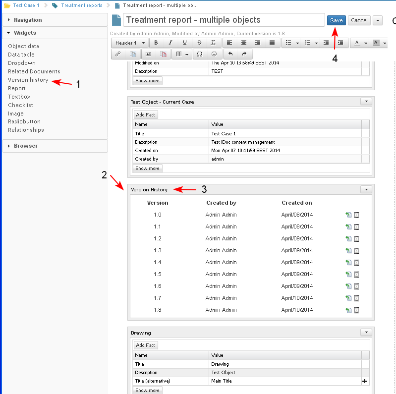
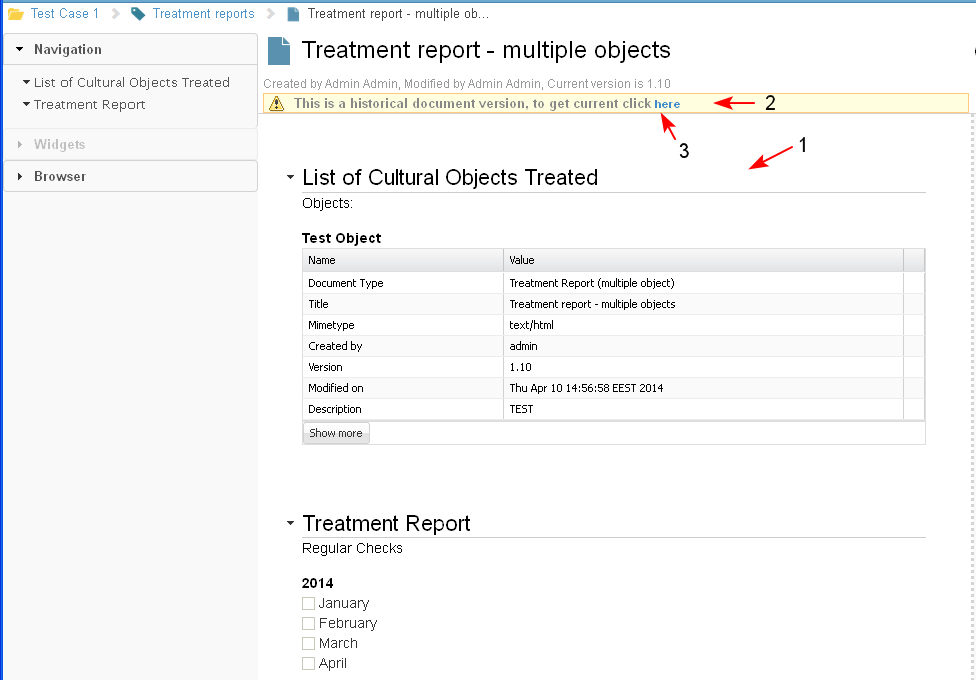

The user cannot set up the "Version history" widget. It is predefined and the information in it is inserted automatically.
- The user selects the widget Version history (1) from the widget palette and it is inserted in the selected section in the iDoc (2). The action may be performed by drag and drop.
- The user adds title of the widget and saves (3-4).

- The widget displays information for all existing previous versions of the document content. The widget is empty if there is only one version of the document.
- For each version are displayed: Version number, Created by, Created on, Description of changes (Not Ready).
- Next to each version of the document in the widget there is an action Revert (1) and Preview version (2).

- The user selects the button Preview version (1) for a previous version of the document.

- The selected version of the document is opened in preview mode (1). The only available action on a previous version is only Print. (the previous versions could not be edited, moved, etc.) (not ready)
There is a message to the user "This is a historical document version, to get current click here" (2). If the user selects the link "here" (3), the system will open the current version of the document.

- The user selects Revert for a selected version of the document.

- A new version (1, 2) of the document is created with the content of the selected old version.